Chapter 14 クラスター分析
本章の内容は, 授業の R 演習スクリプト R_clust_dist.R に対応する.
クラスター分析は, 個体 (または変数) を, 互いに似たもの同士のグループ (クラスター) に分ける手法である. 主な方法として, 個体を1つずつ順に結合していき, その過程を樹形図 (デンドログラム) で表す階層型クラスタリングと, あらかじめ決めたクラスター数 \(K\) に一気に分割する非階層型クラスタリング (代表的な方法が k-means 法) がある.
結果は, 次のような分析者の選択に大きく左右される.
- 変数の変換・標準化をするか
- 個体間の距離 (非類似度) をどう測るか: ユークリッド距離, マンハッタン距離, 相関係数に基づく距離, コサイン距離, Gower 距離など
- クラスター同士の結合方法 (階層型の場合): 完全連結法, 単連結法, 平均連結法, 重心法, ウォード法など
- クラスター数 \(K\)
14.1 基本操作
データ: 株式スタイル指標 (仮想データ)
stock_style26.csv: 26銘柄 (仮想データ)
- mcap: 時価総額 (億円), pbr: PBR (倍), roe: ROE (%), div_yield: 配当利回り (%), beta: ベータ
- market: 市場区分 (プライム, スタンダード, グロース)
- style: データ作成時のスタイル (答え合わせ用. クラスタリングには使わない)
(大型割安, 成長, ディフェンシブ, 小型割安, 中間: 2つのスタイルの中間的な銘柄)スライド「クラスター分析」の実行例と同じデータである.
style26 <- read.csv("class/stock_style26.csv", row.names = 1, stringsAsFactors = TRUE)
head(style26)
#> mcap pbr roe div_yield beta market style
#> S01 16291 0.77 8.0 4.01 1.29 プライム 大型割安
#> S02 53571 0.82 10.7 3.35 1.09 プライム 大型割安
#> S03 36496 1.92 6.6 3.25 1.19 プライム 大型割安
#> S04 43422 1.29 8.6 3.31 1.15 プライム 大型割安
#> S05 5527 0.34 12.8 3.14 1.16 プライム 大型割安
#> S06 14243 0.61 10.6 4.37 0.99 プライム 大型割安時価総額は銘柄によって桁が大きく異なる (数百億円〜数兆円) ので, 対数に変換して使う. まずは量的変数5つでクラスタリングを行う.
x <- style26 %>%
mutate(log_mcap = log(mcap)) %>%
dplyr::select(log_mcap, pbr, roe, div_yield, beta)
lab <- paste0(rownames(style26), substr(style26$style, 1, 1)) # ラベル: 銘柄コード + スタイルの頭文字
summary(x)
#> log_mcap pbr roe div_yield
#> Min. : 4.927 Min. :0.300 Min. :-2.500 Min. :0.000
#> 1st Qu.: 7.442 1st Qu.:0.850 1st Qu.: 6.450 1st Qu.:1.643
#> Median : 8.950 Median :1.555 Median : 9.650 Median :2.455
#> Mean : 8.473 Mean :2.027 Mean : 9.854 Mean :2.291
#> 3rd Qu.: 9.538 3rd Qu.:2.770 3rd Qu.:12.750 3rd Qu.:3.223
#> Max. :10.889 Max. :5.780 Max. :21.300 Max. :4.370
#> beta
#> Min. :0.2900
#> 1st Qu.:0.7475
#> Median :1.1150
#> Mean :1.0019
#> 3rd Qu.:1.1975
#> Max. :1.6000
round(apply(x, 2, sd), 2) # 変数によって散らばりの大きさが異なる
#> log_mcap pbr roe div_yield beta
#> 1.57 1.54 5.33 1.18 0.37ROE の標準偏差は, 他の変数より数倍大きい.
距離行列
階層型クラスタリングは, 関数hclust()に距離行列を与えて実行する.
距離行列は関数dist()で計算する (デフォルトはユークリッド距離. method = "manhattan", "maximum", "canberra", "binary" なども指定可).
個体 (行) ではなく変数 (列) をクラスタリングする場合は, データを転置 (t()) してから dist() を適用する.
標準化の影響
銘柄 (レコード) のクラスタリング (ウォード法):
par(mfrow = c(1, 2))
plot(hclust(d_raw, method = "ward.D2"), labels = lab, hang = -1, main = "標準化前",
xlab = "", sub = "", cex = 0.7)
plot(hclust(d_std, method = "ward.D2"), labels = lab, hang = -1, main = "標準化後",
xlab = "", sub = "", cex = 0.7)
標準化前は, 散らばりの大きい ROE の影響が大きくなる. 標準化後は, データ作成時のスタイルごとにまとまる.
変数のクラスタリング:
par(mfrow = c(1, 2))
plot(hclust(dist(t(x)), method = "ward.D2"), main = "変数: 標準化前", xlab = "",
sub = "")
plot(hclust(dist(t(scale(x))), method = "ward.D2"), main = "変数: 標準化後",
xlab = "", sub = "")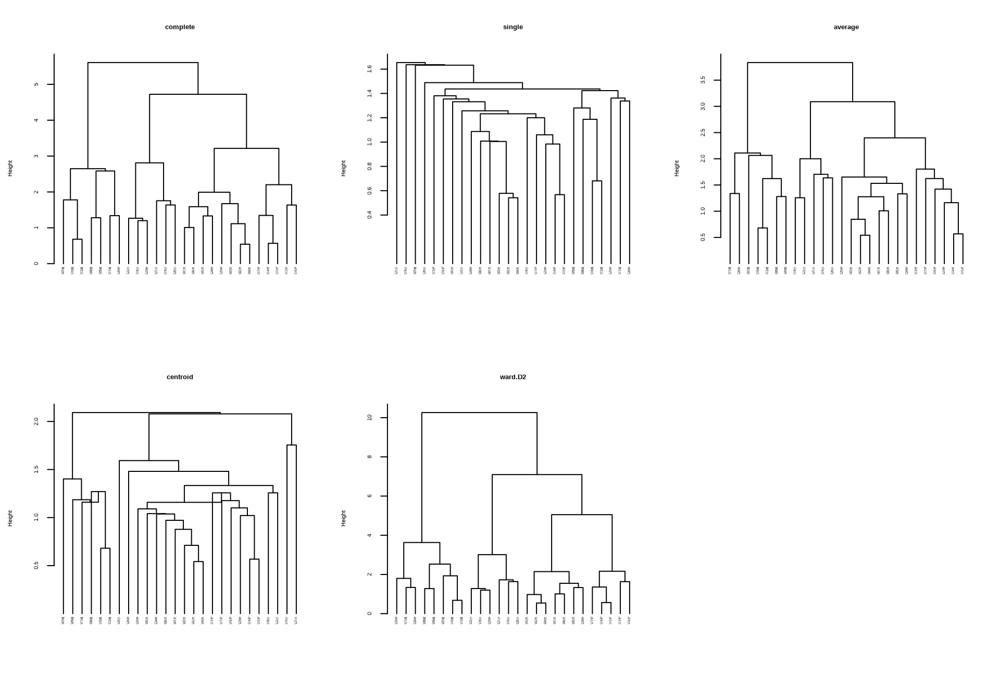
変数の単位や散らばりの大きさが異なる場合は, 標準化してから距離を計算するのが基本である. なお, 時価総額を対数変換せずに使うと, 時価総額の大小だけでクラスターが決まってしまう (試してみよう).
結合方法の比較
hc_complete <- hclust(d_std) # 完全連結法 (最遠隣法) (デフォルト)
hc_single <- hclust(d_std, method = "single") # 単連結法 (最近隣法)
hc_average <- hclust(d_std, method = "average") # 平均連結法 (群平均法)
hc_centroid <- hclust(d_std, method = "centroid") # 重心法 (注: 距離の2乗を使うのが本来の定義)
hc_ward <- hclust(d_std, method = "ward.D2") # ウォード法
par(mfrow = c(2, 3))
for (h in list(hc_complete, hc_single, hc_average, hc_centroid, hc_ward)) {
plot(h, labels = lab, hang = -1, cex = 0.6, main = h$method, xlab = "", sub = "")
}
par(mfrow = c(1, 1))
- 単連結法: 中間的な銘柄を介して, 鎖状につながりやすい (chaining)
- 重心法: 枝の高さが逆転する箇所がある (inversion)
「inversion (逆転) 現象」とは, 本来ならばステップが進むにつれてより”遠く”にあるクラスターと結合していくべきところ, より”近い”クラスターどうしが後から結合される状況を指す. 結合の順序が距離に関する単調性を失っており, デンドログラムの解釈が難しくなる. 重心法やメジアン法 (method = "median") で起こりうる. この現象が生じた場合には, 異なる結合方法を検討する.
(参考) chaining の典型例
sector_trading17.csv: 17業種 x 12か月の売買代金 (兆円) (仮想データ)
- 業種の規模が大きく異なり, 大きい業種ほど互いの差も大きいtrade <- read.csv("class/sector_trading17.csv", row.names = 1)
plot(hclust(dist(trade), method = "single"), hang = -1, main = "業種別売買代金: 単連結法",
xlab = "", sub = "")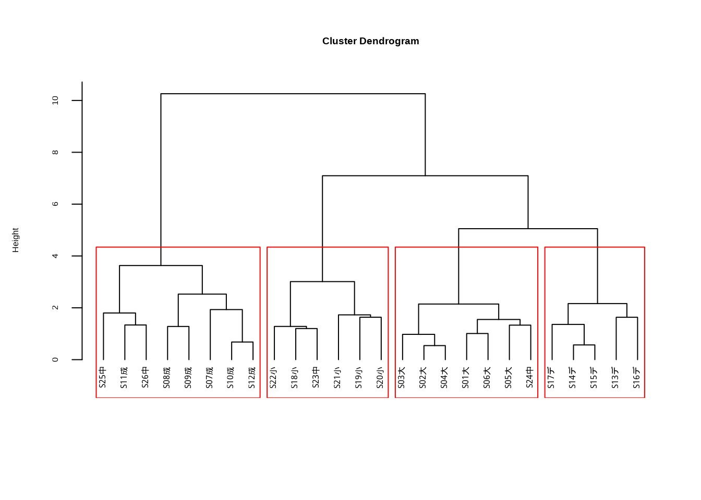
規模の小さい業種のまとまりに, 大きい業種が1つずつ順に結合していく (chaining). はっきりしたクラスターが得られない.
クラスターの形成履歴と切断
hc_ward$merge # 負: 個体番号, 正: クラスター番号
#> [,1] [,2]
#> [1,] -2 -4
#> [2,] -14 -15
#> [3,] -10 -12
#> [4,] -3 1
#> [5,] -1 -6
#> [6,] -18 -23
#> [7,] -8 -9
#> [8,] -22 6
#> [9,] -5 -24
#> [10,] -11 -26
#> [11,] -17 2
#> [12,] 5 9
#> [13,] -13 -16
#> [14,] -19 -20
#> [15,] -21 14
#> [16,] -25 10
#> [17,] -7 3
#> [18,] 4 12
#> [19,] 11 13
#> [20,] 7 17
#> [21,] 8 15
#> [22,] 16 20
#> [23,] 18 19
#> [24,] 21 23
#> [25,] 22 24
hc_ward$height # 結合時のクラスター間距離
#> [1] 0.5422129 0.5675811 0.6808749 0.9762872 1.0082590 1.2001102
#> [7] 1.2802619 1.2818989 1.3317181 1.3380756 1.3595995 1.5495115
#> [13] 1.6349567 1.6365715 1.7274085 1.8008505 1.9316869 2.1462163
#> [19] 2.1634609 2.5291263 3.0109889 3.6315336 5.0526684 7.0961917
#> [25] 10.26069634クラスターで切断し, 各銘柄の所属クラスターを求める.
plot(hc_ward, labels = lab, hang = -1, xlab = "", sub = "")
rect.hclust(hc_ward, k = 4, border = "red")
cls4 <- cutree(hc_ward, k = 4)
table(スタイル = style26$style, クラスター = cls4) # 答え合わせ
#> クラスター
#> スタイル 1 2 3 4
#> ディフェンシブ 0 0 5 0
#> 中間 1 2 0 1
#> 大型割安 6 0 0 0
#> 小型割安 0 0 0 5
#> 成長 0 6 0 0中間的な銘柄以外は, データ作成時のスタイルどおりに分かれている.
# 各クラスターの特徴 (各変数の平均値)
x %>%
mutate(cluster = cls4) %>%
group_by(cluster) %>%
summarise(across(everything(), mean), n = n())
#> # A tibble: 4 × 7
#> cluster log_mcap pbr roe div_yield beta n
#> <int> <dbl> <dbl> <dbl> <dbl> <dbl> <int>
#> 1 1 9.86 0.956 9.56 3.55 1.09 7
#> 2 2 8.44 4.01 15.8 1.18 1.32 8
#> 3 3 9.14 1.62 8.1 2.65 0.422 5
#> 4 4 6.35 0.975 3.68 2.01 0.955 6k-means 法
関数kmeans()を使う. 初期値によって結果が変わるので, nstart で初期値を変えて複数回実行し, 最も良い結果を採用する.
set.seed(1)
km4 <- kmeans(scale(x), centers = 4, nstart = 20)
table(スタイル = style26$style, クラスター = km4$cluster)
#> クラスター
#> スタイル 1 2 3 4
#> ディフェンシブ 0 5 0 0
#> 中間 0 1 1 2
#> 大型割安 0 0 0 6
#> 小型割安 5 0 0 0
#> 成長 0 0 6 0ウォード法の結果と比べてみよう (k-means 法は初期値や \(K\) の選び方に結果が左右される).
Gower 距離
実務では, 量的変数と質的変数が混在するデータをクラスタリングしたいことが多い.
パッケージclusterの関数daisy()で metric = "gower" を指定すると, Gower 距離を計算できる (Gower, 1971).
- 量的変数: \(|x_i - x_j| / (\text{範囲})\) (0〜1 の値)
- 質的変数: 一致なら 0, 不一致なら 1
- これらを (重み付き) 平均したものが, 2つの個体間の Gower 距離 (0〜1)
質的変数は factor 型にしておく (read.csv() の stringsAsFactors = TRUE).
x_mix <- style26 %>%
mutate(log_mcap = log(mcap)) %>%
dplyr::select(log_mcap, pbr, roe, div_yield, beta, market)
d_gower <- daisy(x_mix, metric = "gower")
summary(d_gower)
#> 325 dissimilarities, summarized :
#> Min. 1st Qu. Median Mean 3rd Qu. Max.
#> 0.04403 0.21225 0.36335 0.35120 0.48915 0.65448
#> Metric : mixed ; Types = I, I, I, I, I, N
#> Number of objects : 26
round(as.matrix(d_gower)[1:5, 1:5], 2)
#> S01 S02 S03 S04 S05
#> S01 0.00 0.10 0.11 0.09 0.13
#> S02 0.10 0.00 0.09 0.04 0.11
#> S03 0.11 0.09 0.00 0.05 0.15
#> S04 0.09 0.04 0.05 0.00 0.12
#> S05 0.13 0.11 0.15 0.12 0.00Gower 距離はユークリッド距離ではないので, ウォード法 (ユークリッド距離を前提とする) ではなく, 平均連結法などを使う.
hc_gower <- hclust(d_gower, method = "average")
plot(hc_gower, labels = paste0(lab, substr(style26$market, 1, 1)), hang = -1, main = "Gower 距離 + 平均連結法",
xlab = "", sub = "", cex = 0.7)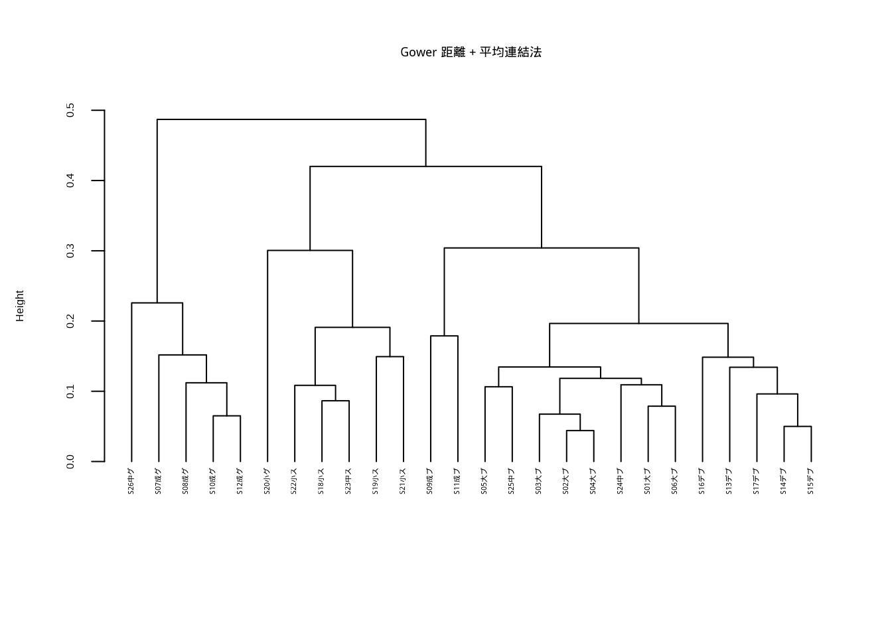
table(市場区分 = style26$market, クラスター = cutree(hc_gower, k = 4))
#> クラスター
#> 市場区分 1 2 3 4
#> グロース 0 5 0 1
#> スタンダード 0 0 0 5
#> プライム 13 0 2 0
table(スタイル = style26$style, クラスター = cutree(hc_gower, k = 4))
#> クラスター
#> スタイル 1 2 3 4
#> ディフェンシブ 5 0 0 0
#> 中間 2 1 0 1
#> 大型割安 6 0 0 0
#> 小型割安 0 0 0 5
#> 成長 0 4 2 0市場区分を加えると, クラスターはほぼ市場区分どおりに分かれる. 例えば, 同じプライム市場の大型割安とディフェンシブが1つのクラスターにまとまり, 成長株はグロース市場とプライム市場で別のクラスターに分かれる. 6つの変数は同じ重みで平均されているが, 市場区分 (質的変数) の寄与が大きいためである. 各変数が Gower 距離にどれだけ寄与しているか (全ての銘柄の組についての平均) を確かめる.
num <- x_mix %>%
dplyr::select(-market)
contrib_num <- sapply(num, function(v) mean(dist(v)/diff(range(v)))) # 量的変数: |差| / 範囲 の平均
contrib_cat <- mean(dist(as.numeric(x_mix$market)) > 0) # 質的変数: 不一致の割合
round(c(contrib_num, market = contrib_cat), 3)
#> log_mcap pbr roe div_yield beta market
#> 0.303 0.312 0.255 0.314 0.322 0.600量的変数の寄与は 0.3 前後なのに対し, 市場区分の寄与 (不一致の割合) は約 0.6 と, 2倍程度になっている.
量的変数の差は 0〜1 の間に連続的に分布するのに対し, 質的変数の差は 0 か 1 しかとらないためである.
引数 weights で, 変数ごとの重みを変えることができる. 市場区分の重みを下げると, 成長株は市場区分によらず1つのクラスターにまとまる.
d_gower_w <- daisy(x_mix, metric = "gower", weights = c(1, 1, 1, 1, 1, 0.4)) # 市場区分の重みを下げる
table(スタイル = style26$style, クラスター = cutree(hclust(d_gower_w, method = "average"),
k = 4))
#> クラスター
#> スタイル 1 2 3 4
#> ディフェンシブ 5 0 0 0
#> 中間 2 0 1 1
#> 大型割安 6 0 0 0
#> 小型割安 0 0 5 0
#> 成長 0 6 0 0実データへの応用は, 本章の「混合データへの応用 (Gower 距離 + PAM)」の節を参照.
(参考) 量的変数とダミー変数のスケール
量的変数と質的変数が混在するとき, 質的変数をダミー変数 (0/1) に変換し, 量的変数 (標準化済み) と合わせてユークリッド距離を計算する方法もよく使われる. このとき, 両者のスケールの違いに注意が必要である.
- 標準化した量的変数の標準偏差は 1 である
- 0 と 1 を半々にとるダミー変数の標準偏差は 0.5 である (一般に, 1 の割合が \(p\) なら \(\sqrt{p(1-p)}\) で, 最大でも 0.5)
したがって, そのまま並べると, ダミー変数は量的変数よりも距離への影響が小さくなる (逆に, ダミー変数も標準化すると, 1 の割合の小さい (まれな) カテゴリーほど, 1 をとったときの値が大きくなり, 影響が大きくなる).
どう揃えるかについては, いくつかの考え方が提案されている.
- Gower 距離: 量的変数を範囲で割り, 質的変数は一致・不一致で測る (上の例). ただし, 上で見たように, 質的変数の寄与が大きくなりやすい
- 量的変数を標準偏差の2倍で割る: Gelman (2008) は, 回帰分析の説明変数の文脈で, 量的変数を「標準偏差の2倍」で割ることを提案した. こうすると, 量的変数の標準偏差は 0.5 となり, 標準化しないダミー変数 (0/1, 半々なら標準偏差 0.5) と係数の大きさを比べやすくなる. クラスタリングの距離の文脈でも, 量的変数とダミー変数の影響をおおむね揃える1つの目安になる
- 変数ごとに重みを付ける: 分析の目的に応じて, 質的変数の重みを分析者が決める (
daisy()のweightsなど) - 混合データ向けの手法: k-prototypes 法 (量的変数は k-means, 質的変数は k-modes の考え方を組み合わせる. パッケージclustMixType), 混合データの因子分析 (FAMD. パッケージFactoMineR) で次元縮約してからクラスタリング, など
いずれの方法でも, 質的変数と量的変数の相対的な重みは, 分析者の判断を含む. 結果がその判断にどの程度左右されるかを, 重みを変えて確かめることが大切である.
参考文献:
- Gower, J. C. (1971). A general coefficient of similarity and some of its properties. Biometrics, 27(4), 857–871.
- Gelman, A. (2008). Scaling regression inputs by dividing by two standard deviations. Statistics in Medicine, 27(15), 2865–2873. (https://sites.stat.columbia.edu/gelman/research/published/standardizing7.pdf)
14.2 相関係数に基づく距離
データ: 米国株の30業種ポートフォリオのリターン (実データ: Kenneth French Data Library)
主成分分析の章の自主課題と同じデータである (業種名の意味も同章を参照). 直近10年 (120か月) の時価総額加重の月次リターン (%) を, French Data Library から直接読み込む.
url <- "https://mba.tuck.dartmouth.edu/pages/faculty/ken.french/ftp/30_Industry_Portfolios_CSV.zip"
tmp <- tempfile(fileext = ".zip")
download.file(url, tmp, mode = "wb", quiet = TRUE)
lines <- readLines(unz(tmp, "30_Industry_Portfolios.csv"))
start <- grep("Average Value Weighted Returns -- Monthly", lines)[1] + 1 # 時価総額加重, 月次
end <- start + which(trimws(lines[-(1:start)]) == "")[1] - 1
industry <- tail(read.csv(text = lines[start:end], check.names = FALSE), 120) # 直近120か月
range(industry[, 1])
#> [1] 201610 202609
ret <- industry[, -1] # 1列目 (年月) を除く相関係数による距離と平均連結法
「値動きの似ている業種ほど近い」と考え, 相関係数を使った距離 \(d = 1 - (\text{相関係数})\) (0〜2 の値をとる) で業種をクラスタリングする.
cor_ret <- cor(ret)
d_cor <- as.dist(1 - cor_ret)
ind_hc <- hclust(d_cor, method = "average")
plot(ind_hc, hang = -1, cex = 0.7, main = "業種のクラスタリング (1 - 相関係数, 平均連結法)",
xlab = "", sub = "")
rect.hclust(ind_hc, k = 5, border = "blue")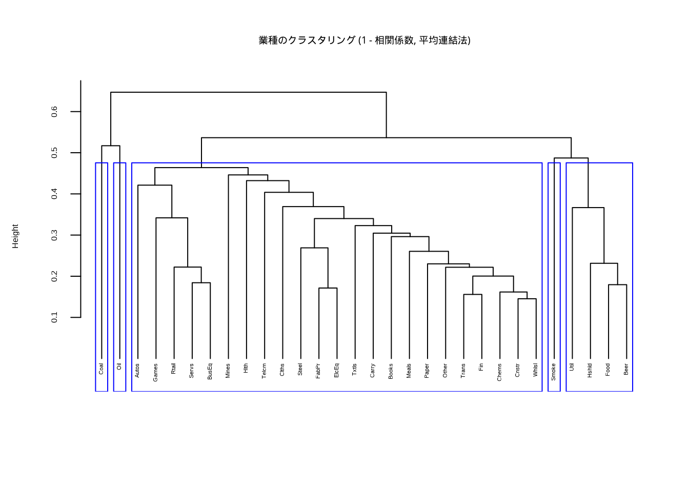
split(names(ret), cutree(ind_hc, k = 5))
#> $`1`
#> [1] "Food" "Beer" "Hshld" "Util"
#>
#> $`2`
#> [1] "Smoke"
#>
#> $`3`
#> [1] "Games" "Books" "Clths" "Hlth" "Chems" "Txtls" "Cnstr" "Steel" "FabPr"
#> [10] "ElcEq" "Autos" "Carry" "Mines" "Telcm" "Servs" "BusEq" "Paper" "Trans"
#> [19] "Whlsl" "Rtail" "Meals" "Fin" "Other"
#>
#> $`4`
#> [1] "Coal"
#>
#> $`5`
#> [1] "Oil"平均連結法では, 他の業種と値動きの異なる少数の業種 (エネルギー関連や, 食品・公益などのディフェンシブ業種) が先に分かれ, 残りの業種は大きな1つのクラスターになる. 業種間の相関は全体に高い (市場全体の動き. 主成分分析の第1主成分に対応) ためである.
ウォード法
標準化した2つのリターン系列の間のユークリッド距離は, \(\sqrt{2(1 - \text{相関係数})}\) に比例する. ウォード法はユークリッド距離を前提とするので, この形に変換してから使う.
ind_ward <- hclust(as.dist(sqrt(2 * (1 - cor_ret))), method = "ward.D2")
plot(ind_ward, hang = -1, cex = 0.7, main = "業種のクラスタリング (ウォード法)",
xlab = "", sub = "")
rect.hclust(ind_ward, k = 5, border = "red")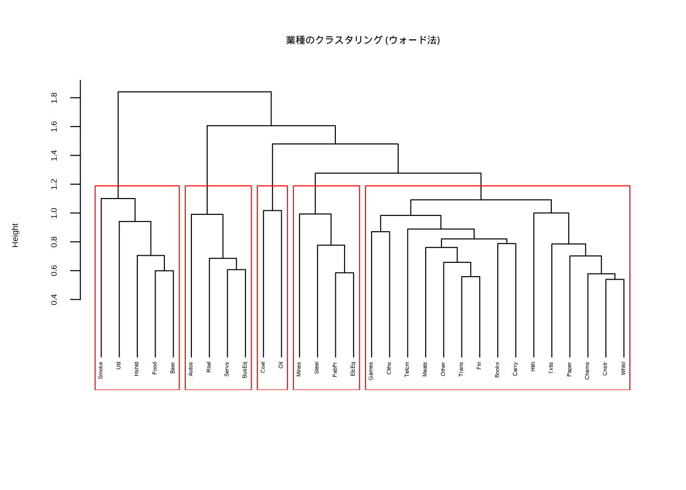
split(names(ret), cutree(ind_ward, k = 5))
#> $`1`
#> [1] "Food" "Beer" "Smoke" "Hshld" "Util"
#>
#> $`2`
#> [1] "Games" "Books" "Clths" "Hlth" "Chems" "Txtls" "Cnstr" "Carry" "Telcm"
#> [10] "Paper" "Trans" "Whlsl" "Meals" "Fin" "Other"
#>
#> $`3`
#> [1] "Steel" "FabPr" "ElcEq" "Mines"
#>
#> $`4`
#> [1] "Autos" "Servs" "BusEq" "Rtail"
#>
#> $`5`
#> [1] "Coal" "Oil"業種の分類の情報を使っていないのに, ディフェンシブ業種 (食品, 飲料, たばこ, 家庭用品, 公益), 景気敏感・成長業種 (自動車, 事業用機器, 事業サービス, 小売), 素材・資本財 (鉄鋼, 金属製品・機械, 電気機器, 鉱業), エネルギー関連業種 (石炭, 石油・天然ガス) などのまとまりが得られる. なお, データは毎月更新されるので, 実行する時期によって結果は多少変わりうる. 主成分分析の章の自主課題で見た, 第2・第3主成分の負荷量と比べてみよう.
参考: ユークリッド距離 (リターンの水準・ボラティリティの違いも反映される).
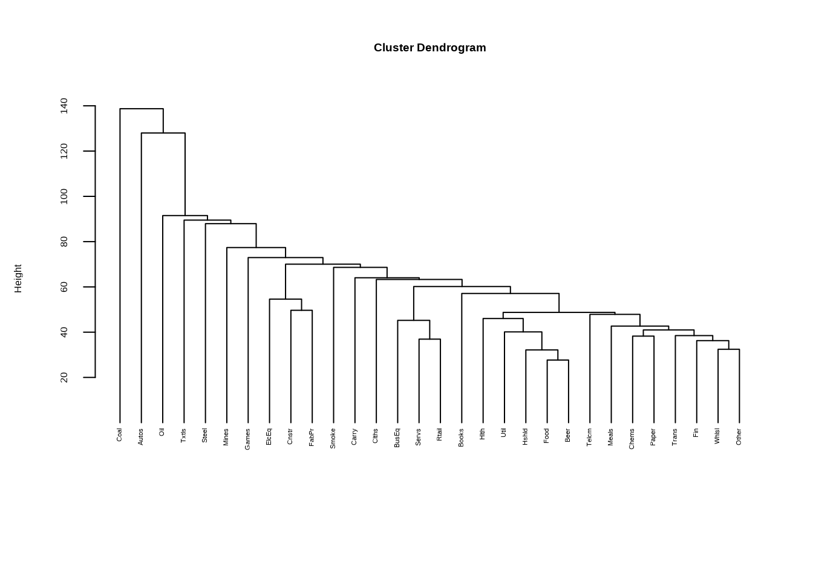
自主課題
- 相関係数による距離と比べて, ユークリッド距離の結果はどう違うか?
- 期間 (例: 2000年代) を変えると, 業種のまとまりはどう変わるか?
14.3 k-means 法とクラスター数の決定
主成分分析・因子分析の章と同じ財務比率データ (200社) を使う.
firm <- read.csv("class/firm_ratios.csv")
ratios_z <- firm %>%
dplyr::select(current_ratio:emp_growth) %>%
scale() # 標準化 (重要!)クラスター数 K の決定
# エルボー法 (クラスター内平方和 WCSS)
wcss <- sapply(1:10, function(k) {
set.seed(1)
kmeans(ratios_z, centers = k, nstart = 20)$tot.withinss
})
plot(1:10, wcss, type = "b", xlab = "クラスター数 K", ylab = "クラスター内平方和 (WCSS)")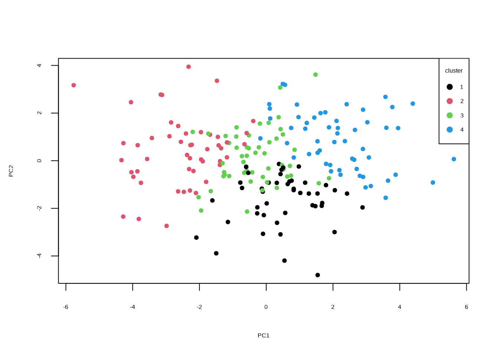
# 平均シルエット幅
d_firm <- dist(ratios_z)
avg_sil <- sapply(2:10, function(k) {
set.seed(1)
km <- kmeans(ratios_z, centers = k, nstart = 20)
mean(silhouette(km$cluster, d_firm)[, "sil_width"])
})
plot(2:10, avg_sil, type = "b", xlab = "クラスター数 K", ylab = "平均シルエット幅")
シルエット幅は, 各個体について「自分のクラスター内の平均距離」と「最も近い他のクラスターまでの平均距離」を比べた指標 (−1〜1) で, 大きいほど, うまく分かれていることを表す.
このデータでは, はっきりした「エルボー」は見えず, 平均シルエット幅も全体に小さい.
財務比率のように連続的に分布するデータでは, 「自然な」クラスター数は存在しないことも多い.
その場合は, 解釈のしやすさや分析の目的 (例: 企業を4つのタイプに分けて比較したい) で \(K\) を決める.
ギャップ統計量 (cluster::clusGap(ratios_z, kmeans, K.max = 10, nstart = 20)) も使える.
(参考) Hartigan ルール: \(K\) 個から \(K+1\) 個にクラスターを増やすことを正当化できるかを, クラスター内平方和の減少幅で逐次判定する (Hartigan の数が 10 を超えれば増やす). パッケージusefulの関数FitKMeans()で計算できる.
library(useful)
firm_hart <- FitKMeans(ratios_z, max.clusters = 10, nstart = 20, seed = 1)
firm_hart
#> Clusters Hartigan AddCluster
#> 1 2 73.01612 TRUE
#> 2 3 36.64113 TRUE
#> 3 4 24.70777 TRUE
#> 4 5 21.14282 TRUE
#> 5 6 16.87103 TRUE
#> 6 7 14.17474 TRUE
#> 7 8 12.20799 TRUE
#> 8 9 10.39355 TRUE
#> 9 10 10.93872 TRUE
PlotHartigan(firm_hart)
このデータでは, \(K = 10\) まで「クラスターを増やすべき」と判定され, はっきりしたクラスター数は示されない. 上のエルボー法やシルエット幅の結果と整合的である.
K = 4 での実行
set.seed(1)
firm_km <- kmeans(ratios_z, centers = 4, nstart = 20)
table(firm_km$cluster)
#>
#> 1 2 3 4
#> 46 49 51 54
round(firm_km$centers, 2) # 各クラスターの中心 (標準化後の値)
#> current_ratio quick_ratio equity_ratio de_ratio roa roe op_margin
#> 1 -0.46 -0.35 -0.36 0.35 0.49 0.51 0.47
#> 2 -0.76 -0.70 -0.91 0.72 -1.12 -0.92 -1.18
#> 3 -0.01 -0.22 0.04 0.11 0.39 0.39 0.38
#> 4 1.10 1.14 1.09 -1.05 0.24 0.04 0.32
#> sales_growth asset_growth emp_growth
#> 1 0.79 0.84 0.69
#> 2 -0.59 -0.67 -0.45
#> 3 -0.76 -0.70 -0.69
#> 4 0.58 0.55 0.47
firm %>%
mutate(cluster = firm_km$cluster) %>%
group_by(cluster) %>%
summarise(n = n(), across(c(equity_ratio, roa, sales_growth), mean))
#> # A tibble: 4 × 5
#> cluster n equity_ratio roa sales_growth
#> <int> <int> <dbl> <dbl> <dbl>
#> 1 1 46 40.0 5.43 9.14
#> 2 2 49 32.9 1.39 0.351
#> 3 3 51 45.2 5.19 -0.716
#> 4 4 54 58.9 4.81 7.80自主課題 各クラスターにどのような名前を付けられるか? (例: 「安定・高収益型」)
主成分得点の平面上でクラスターを確認する.
pc <- prcomp(ratios_z)
plot(pc$x[, 1:2], col = firm_km$cluster, pch = 19, cex = 0.7)
legend("topright", legend = 1:4, col = 1:4, pch = 19, title = "cluster")
14.4 疎なデータと距離の選び方
bank_products.csv: 銀行顧客500人 x 12商品の年間利用回数 (仮想データ)
- savings: 普通預金, time_deposit: 定期預金, fx_deposit: 外貨預金, inv_trust: 投資信託,
nisa: NISA口座での取引, jgb: 個人向け国債, stocks: 株式 (証券仲介), annuity_ins: 個人年金保険,
mortgage: 住宅ローン返済, card_loan: カードローン, credit_card: クレジットカード, app_payment: スマホ決済
※ 0 の多い ("疎な", sparse) データbank <- read.csv("class/bank_products.csv")
prod <- bank %>%
dplyr::select(-customer_id)
mean(prod == 0) # 0 の割合
#> [1] 0.4533333
colMeans(prod) # 商品ごとの平均利用回数
#> savings time_deposit fx_deposit inv_trust nisa jgb
#> 15.352 1.090 0.542 2.012 2.702 0.408
#> stocks annuity_ins mortgage card_loan credit_card app_payment
#> 0.992 0.880 2.348 0.420 4.868 6.478商品 (変数) のクラスタリング
# ユークリッド距離
prod_hc <- hclust(dist(t(prod)), method = "ward.D2")
plot(prod_hc, hang = -1, xlab = "", sub = "")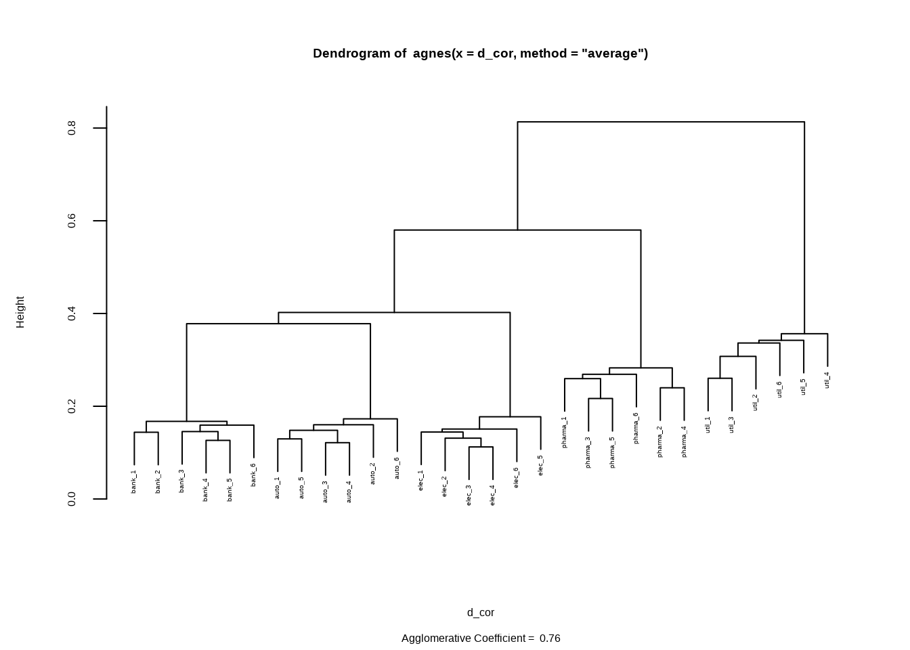
利用回数の多い商品 (普通預金など) が, 他から離れてしまう. 利用の有無 (0/1) に変換したり, コサイン類似度に基づく距離 ($d = 1 - $ コサイン類似度. パッケージproxy) を使ったりすると, 「一緒に使われやすい」商品がまとまる.
library(proxy)
prod01 <- (prod > 0) * 1
par(mfrow = c(2, 2))
plot(hclust(dist(t(prod)), method = "ward.D2"), hang = -1, main = "回数, ユークリッド",
xlab = "", sub = "")
plot(hclust(dist(t(prod01)), method = "ward.D2"), hang = -1, main = "有無, ユークリッド",
xlab = "", sub = "")
plot(hclust(proxy::dist(t(prod), method = "cosine"), method = "ward.D2"), hang = -1,
main = "回数, コサイン", xlab = "", sub = "")
plot(hclust(proxy::dist(t(prod01), method = "cosine"), method = "ward.D2"), hang = -1,
main = "有無, コサイン", xlab = "", sub = "")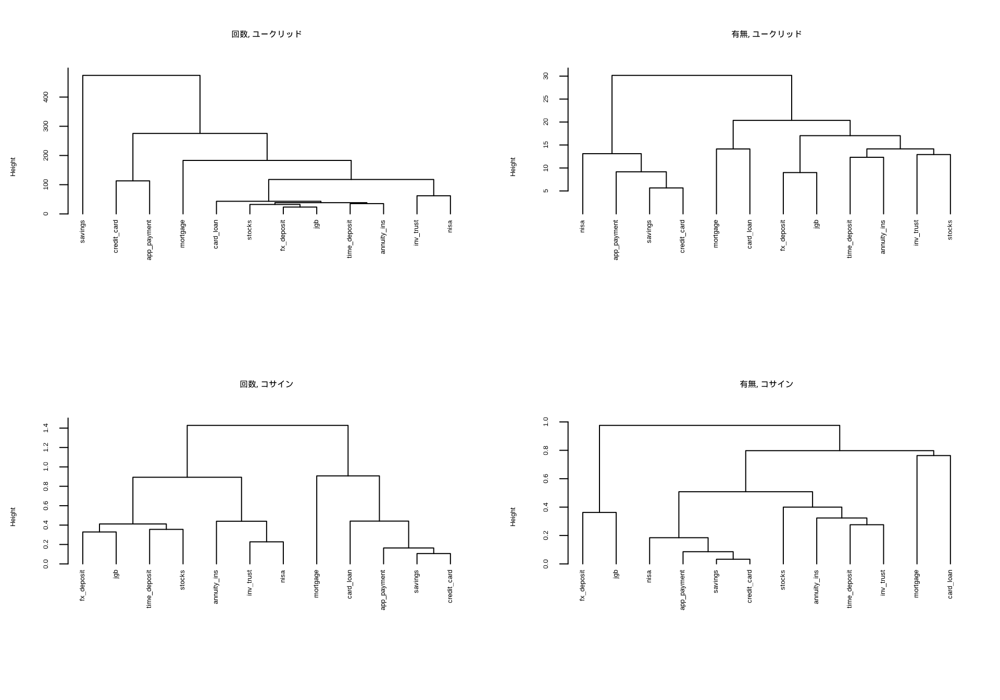
距離の選び方が結果に大きく影響する.
顧客セグメンテーション
利用回数の偏りを和らげるため \(\log(1 + \text{回数})\) に変換し, k-means 法を適用する.
prod_log <- log1p(prod)
set.seed(1)
cust_km <- kmeans(prod_log, centers = 4, nstart = 20)
table(cust_km$cluster)
#>
#> 1 2 3 4
#> 145 119 95 141
bank %>%
mutate(cluster = cust_km$cluster) %>%
group_by(cluster) %>%
summarise(n = n(), across(savings:app_payment, ~round(mean(.x), 1)))
#> # A tibble: 4 × 14
#> cluster n savings time_deposit fx_deposit inv_trust nisa jgb stocks
#> <int> <int> <dbl> <dbl> <dbl> <dbl> <dbl> <dbl> <dbl>
#> 1 1 145 17 1.4 0.2 4.4 6.6 0.2 1.1
#> 2 2 119 8.5 2.4 1.9 2.4 1 1.5 2.2
#> 3 3 95 17.4 0.5 0.1 0.5 0.9 0 0.2
#> 4 4 141 18 0.1 0 0.3 1.4 0 0.5
#> # ℹ 5 more variables: annuity_ins <dbl>, mortgage <dbl>, card_loan <dbl>,
#> # credit_card <dbl>, app_payment <dbl>自主課題 4つの顧客層は, それぞれどのような特徴を持つか? どのような商品提案が考えられるか?
顧客のように個体の数が多い場合, 階層型クラスタリングには注意が必要である. 全ての個体間の距離を計算して段階的にクラスターを形成するため, 計算時間やメモリ消費が大きくなる. また, デンドログラムが密集してしまい, クラスターの構造を読み取りにくい. 個体数が多い場合は, k-means 法などの非階層型の方法が使われることが多い.
(参考) 変数の次元が大きい場合には, 主成分得点 (上位数個) を使ってクラスタリングすることもある. ただし, 元データが 0 の多い疎なデータの場合, 通常の主成分分析が適しているとは限らない.
14.5 混合データへの応用 (Gower 距離 + PAM)
データ: 銀行の顧客と定期預金の勧誘 (実データ: UCI Machine Learning Repository)
ポルトガルの銀行が行った, 定期預金の電話勧誘キャンペーンの記録である (Moro et al., 2014).
UCI Machine Learning Repository の “Bank Marketing” から直接読み込む (zip ファイルの中にさらに zip ファイルがあり, その中の bank-full.csv を使う. 区切り文字は ;).
bank-full.csv: 45,211人
- age: 年齢, job: 職業, marital: 婚姻状況, education: 学歴, default: 債務不履行の有無,
balance: 平均残高 (ユーロ), housing: 住宅ローンの有無, loan: 個人ローンの有無
- (勧誘の記録) contact, day, month, duration, campaign, pdays, previous, poutcome
- y: 定期預金の申込の有無 (yes / no)url <- "https://archive.ics.uci.edu/static/public/222/bank+marketing.zip"
tmp <- tempfile(fileext = ".zip")
download.file(url, tmp, mode = "wb", quiet = TRUE)
inner <- unzip(tmp, files = "bank.zip", exdir = tempdir()) # zip の中の zip を取り出す
bank_mkt <- read.csv(unz(inner, "bank-full.csv"), sep = ";", stringsAsFactors = TRUE)
dim(bank_mkt)
#> [1] 45211 17
mean(bank_mkt$y == "yes") # 申込率
#> [1] 0.1169848Gower 距離と PAM
顧客属性 (量的変数 + 質的変数) だけを使って, 顧客をクラスタリングする.
申込の有無 y は, クラスタリングには使わず, 結果の解釈に使う.
Gower 距離は \(n \times n\) の距離行列を作るので, 1,000人を無作為に抽出して使う.
set.seed(1)
bm <- bank_mkt[sample(nrow(bank_mkt), 1000), ]
cust <- bm %>%
dplyr::select(age, job, marital, education, default, balance, housing, loan)
d_cust <- daisy(cust, metric = "gower")クラスタリングには, パッケージclusterの関数pam() (PAM: Partitioning Around Medoids) を使う.
k-means 法の「重心」の代わりに, 実在する個体 (メドイド) をクラスターの代表とする方法で, 距離行列だけで実行できるので, Gower 距離のようなユークリッド距離以外の距離にも使える (本章の (参考) の節も参照).
avg_sil_pam <- sapply(2:8, function(k) pam(d_cust, k, diss = TRUE)$silinfo$avg.width)
plot(2:8, avg_sil_pam, type = "b", xlab = "クラスター数 K", ylab = "平均シルエット幅")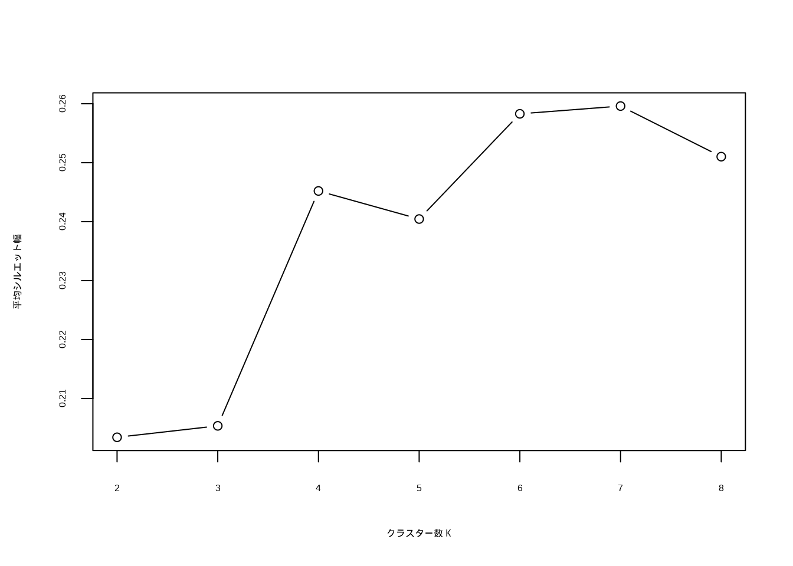
平均シルエット幅は全体に小さく, \(K\) による差も小さい (財務比率の例と同様, はっきりしたクラスター構造はない). ここでは解釈しやすさから \(K = 4\) とする.
cust_pam <- pam(d_cust, k = 4, diss = TRUE)
cust[cust_pam$id.med, ] # 各クラスターのメドイド (代表的な顧客)
#> age job marital education default balance housing loan
#> 31288 38 management married tertiary no 1101 yes no
#> 23997 32 technician single secondary no 224 no no
#> 23047 50 blue-collar married secondary no 579 no no
#> 8117 37 blue-collar married secondary no 489 yes no
bm %>%
mutate(cluster = cust_pam$clustering) %>%
group_by(cluster) %>%
summarise(n = n(), age = mean(age), balance = median(balance), married = mean(marital ==
"married"), housing = mean(housing == "yes"), loan = mean(loan == "yes"),
subscribe = mean(y == "yes"))
#> # A tibble: 4 × 8
#> cluster n age balance married housing loan subscribe
#> <int> <int> <dbl> <dbl> <dbl> <dbl> <dbl> <dbl>
#> 1 1 235 40.3 751 0.609 0.719 0.128 0.115
#> 2 2 201 33.1 358 0.0746 0.299 0.114 0.149
#> 3 3 210 50.6 580. 0.852 0 0.138 0.176
#> 4 4 354 39.8 372 0.706 1 0.189 0.0593顧客属性だけで作ったクラスターの間で, 定期預金の申込率 (subscribe) に差がある.
例えば, 住宅ローンを持つクラスターでは申込率が低く, 住宅ローンを持たない年齢の高い顧客のクラスターでは申込率が高い.
自主課題
- 各クラスターは, どのような顧客層か? 次のキャンペーンで, この結果をどのように活用できるか?
- 平均残高
balanceは右に裾の長い分布で, Gower 距離では範囲 (最大値 − 最小値) で割るため, 大部分の顧客の差がほぼ 0 になる. 対数変換などをしてから距離を計算すると, 結果はどう変わるか?
参考文献:
- Moro, S., Cortez, P., and Rita, P. (2014). A data-driven approach to predict the success of bank telemarketing. Decision Support Systems, 62, 22–31.
14.6 (参考) 発展的なクラスター分析
関数agnes()
パッケージclusterの関数agnes() (AGglomerative NESting) で, 階層型クラスタリングをより細かく制御しながら実行できる.
出力の凝集係数 (agglomerative coefficient, 0〜1) は, クラスター構造の強さの目安となる.
res_agnes <- agnes(d_cor, method = "average") # 業種リターンの相関係数に基づく距離
res_agnes$ac # 凝集係数
#> [1] 0.5623463
plot(res_agnes, which.plots = 2, cex = 0.6)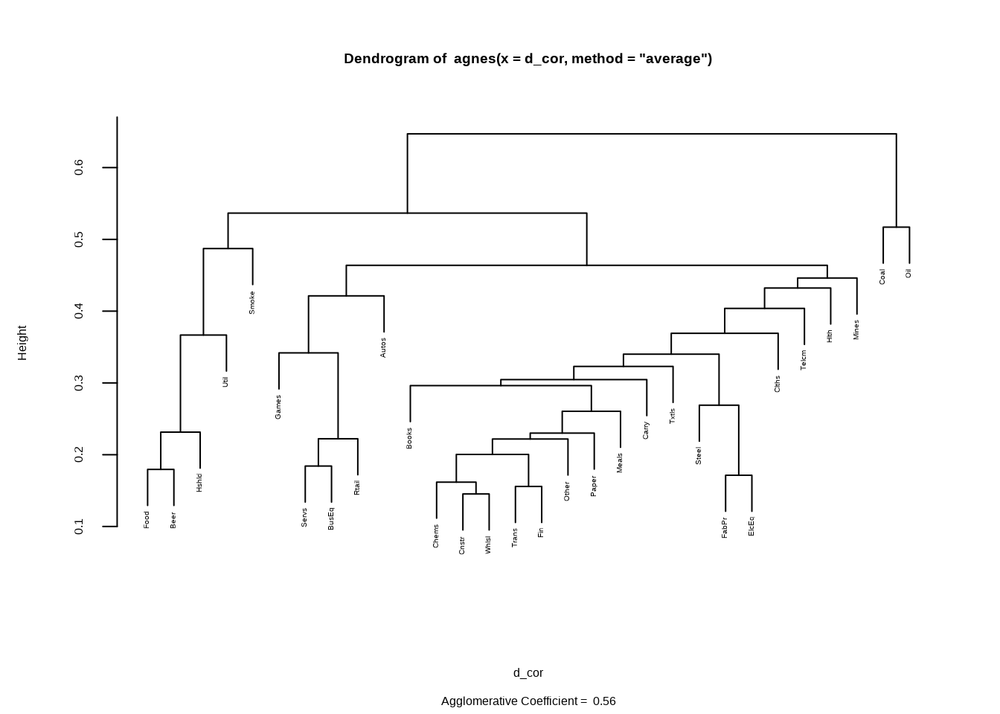
関数pheatmap()
パッケージpheatmapは, 行と列の両方を階層型クラスタリングし, ヒートマップとして可視化する (遺伝子発現データの分析などで多用される).
library(pheatmap)
pheatmap(cor_ret, clustering_distance_rows = d_cor, clustering_distance_cols = d_cor,
clustering_method = "average", fontsize = 7)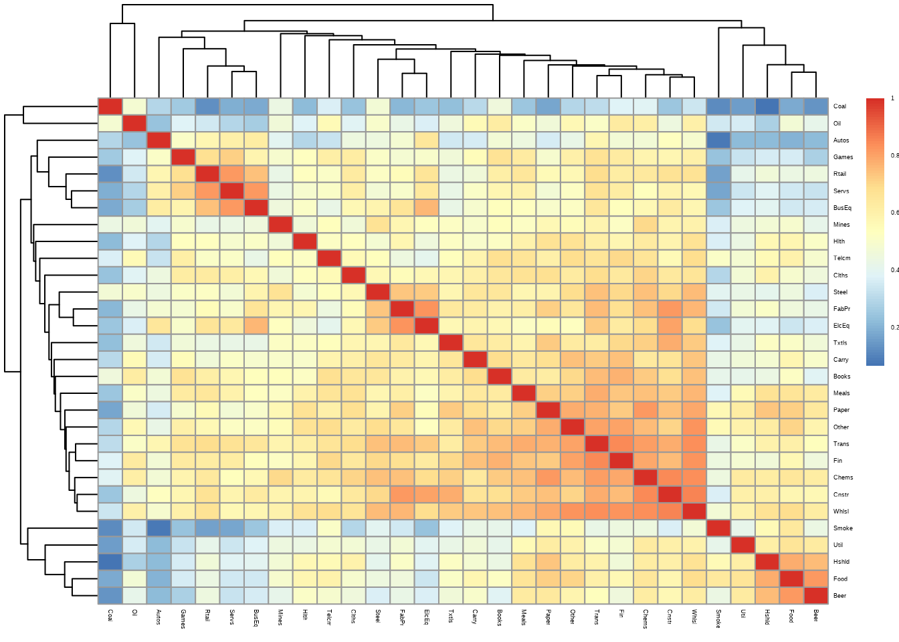